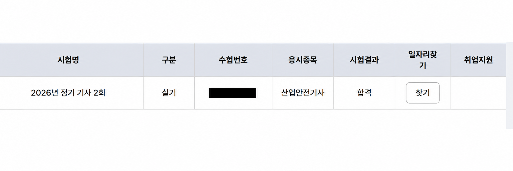
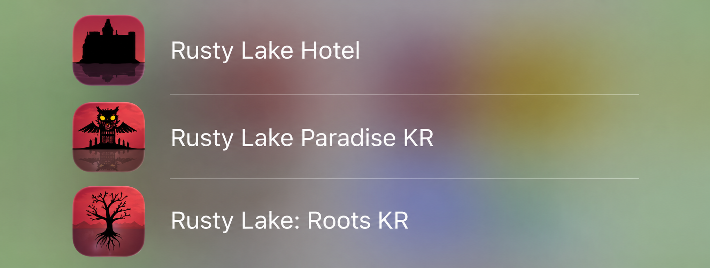
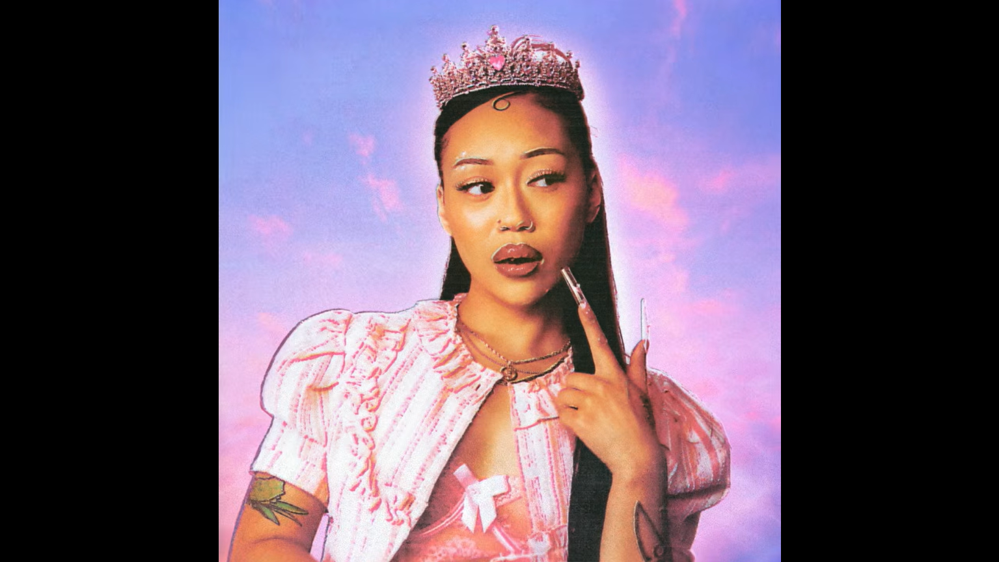

01
단기간의 몰입
설명 보기 설명 접기
산업안전기사를 준비하며 유튜브 강의를 전체적으로 듣고, 기출문제의 답안을 직접 말할 수 있을 때까지 반복했습니다. 목표가 정해지면 짧은 기간 깊게 몰입하는 편입니다.
ABOUT ME
IT 및 보안 인프라 분야를 배우고 있는 비전공자입니다. 저를 설명하는 장점과 오래 즐겨온 취미를 소개합니다.
THREE THINGS ABOUT ME

산업안전기사를 준비하며 유튜브 강의를 전체적으로 듣고, 기출문제의 답안을 직접 말할 수 있을 때까지 반복했습니다. 목표가 정해지면 짧은 기간 깊게 몰입하는 편입니다.

스도쿠와 ROK 게임처럼 가볍게 집중해 풀 수 있는 퍼즐을 좋아합니다. Rusty Lake 시리즈는 약 10년째 즐기고 있습니다.

음악이나 영상, 드라마를 발견하면 처음부터 끝까지 정주행합니다. 요즘은 SAILORR의 ‘FROM FLORIDA’S FINEST’ Deluxe를 자주 듣습니다.